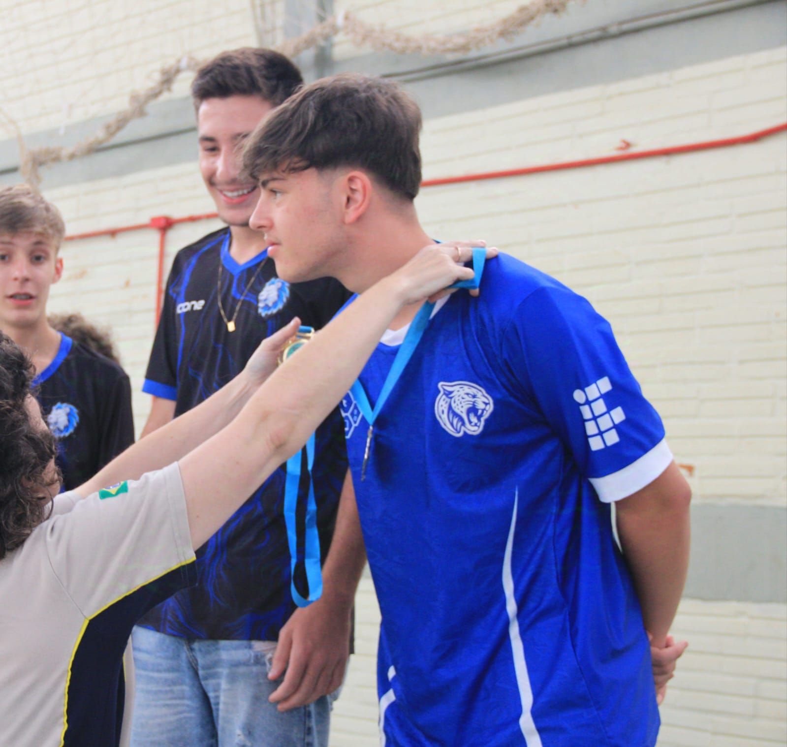

Sou uma pessoa curiosa e determinada, sempre buscando aprender coisas novas e ampliar meus conhecimentos. Atualmente curso Ciência da Computação e tenho grande interesse por tecnologia, mas também gosto da área de engenharia mecânica, o que me faz enxergar possibilidades de unir essas áreas no futuro. Trabalho no setor de usinagem CNC de uma metalúrgica, experiência que me ajuda a desenvolver responsabilidade, atenção aos detalhes e disciplina. Além disso, possuo formação técnica em informática, gosto de estudar inglês e estou sempre procurando maneiras de crescer profissionalmente e alcançar meus objetivos por meio do conhecimento e da dedicação.